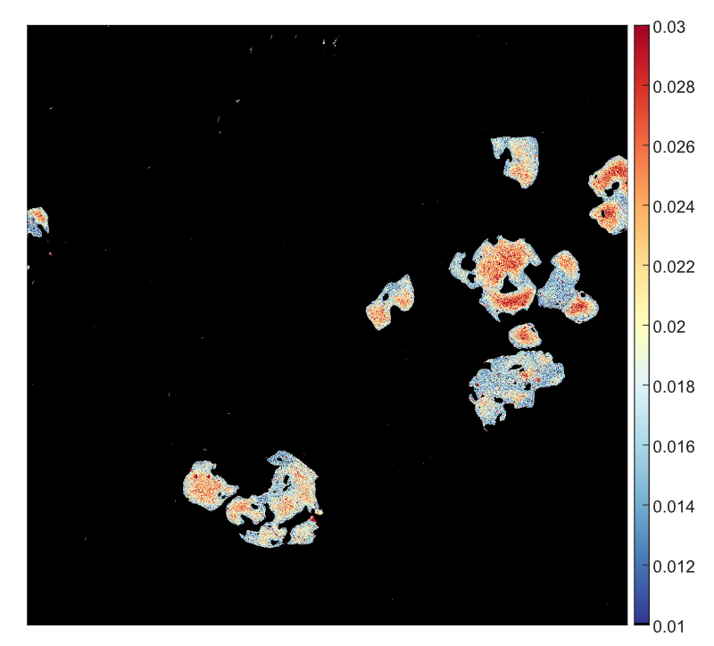
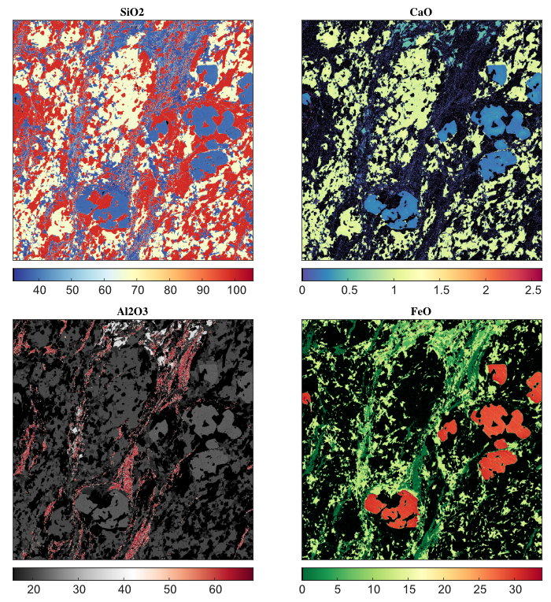
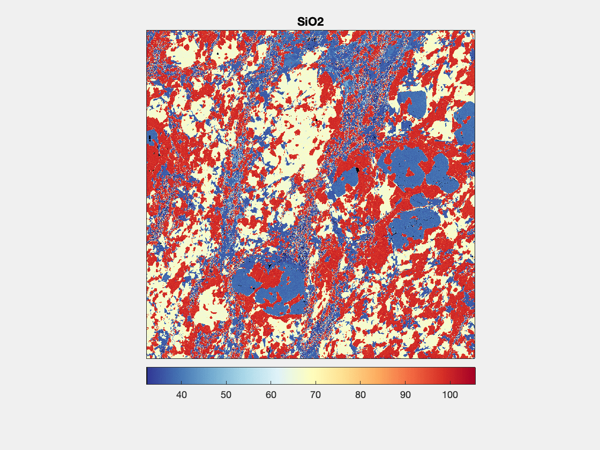
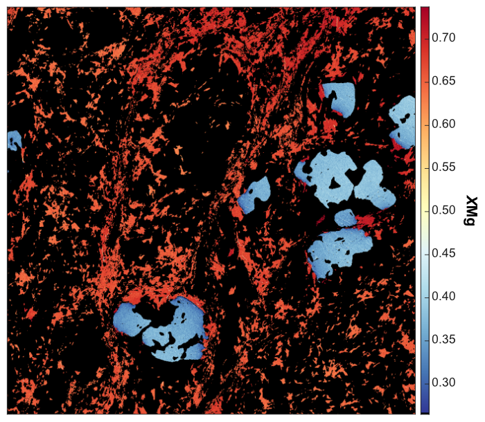
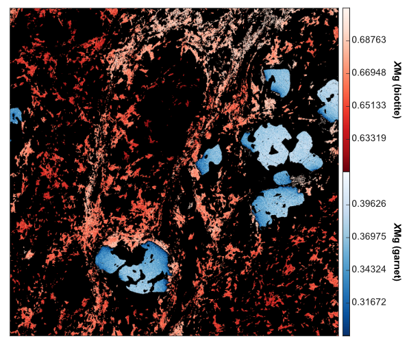

Help file version 14.01.2024 by P. Lanari
Table of content
What are "image-data" in XMapTools?
How to create and edit images?
- Single-plot image
- Multi-plot image
- Multi-plot image & GIF
- Multi-layer image (shared scale)
- Multi-layer image (multi-scale)
Images are plots stored in the project file and can be accessed from the primary menu under the Image category. These plots can be created using the tools available in the Image menu. They can be edited at any time and changes are saved.
Four types of images can be created:
Use the main menu to view a map and, if necessary, adjust the colour contrast using the live histogram. Select Image >> Add Current Image from the main menu. A new image object will be created and placed in the Image category at the bottom of the primary menu.
You can view this image at any time by selecting Img (single-layer) #X from the primary menu (where X is the number of the image).
To edit the image, expand the image object and select the map. You can adjust the colour settings (borders, colour palette, etc.); changes are saved within the image object.
To export the image, select the image item in the primary menu and choose File > Save Image or Edit > Copy Image from the menu.

Figure 1: Example of an image generated with XMapTools for Ca (apfu) in garnet.
Activate multi-selection mode from the Image > Multi-Selection Mode menu. The item labels in the primary menu are displayed in blue when this mode is active: multiple maps can be selected and data manipulation is not possible. It is not recommended to use XMapTools with multi-selection mode enabled, it should only be used to generate images.
Once the mode is activated, select multiple maps from the primary menu. A mosaic will be created and displayed in the main window. Once the maps have been selected, select Image > Add Multi-Plot Image from the menu and a new image object will be added to the Images category.
You can expand the Img (multi-plot) #X item in the primary menu (where X is the number of the image object) and select the maps one by one to adjust the colour contrast. You can also change the colour palette in the Options panel.
Select the main item (Img (multi-plot) #X) to view the mosaic and save the image.

Figure 2: Example of a multi-plot image generated by XMapTools. Maps are expressed in oxide wt%. Note that each map is plotted using a different colour palette.
A GIF can be created from a multi-plot image. Select a multi-plot object, right click on the name and select Save as GIF.

Figure 3: Example of GIF generated with the images shown in Figure 2.
Activate multi-selection mode from the Image > Multi-Selection Mode menu. The item labels in the primary menu are displayed in blue when this mode is active: multiple maps can be selected and data manipulation is not possible. It is not recommended to use XMapTools with multi-selection mode enabled, it should only be used to generate images.
Select two (or more) compatible maps to plot together, for example a selection of Fe_apfu in biotite and Fe_apfu in garnet, or XMg in biotite and XMg in garnet. In both cases the same amount is selected for different minerals and with the same unit. After selecting the maps, select Image > Add Multi-Layer Image (Shared Scale) from the menu and a new image object will be added to the Images category.
You can expand the Img (multi-layer ShS) #X item in the primary menu (where X is the number of the image object) and select the maps one by one to adjust the colour contrast. Note that the same minimum and maximum values are applied to both images (shared scale option, see below for an alternative option). You can also change the colour palette in the Options panel.
Select the main item to view the multi-layer map and save the image.

Figure 4: Example of multi-layer image with common colour scale for XMg in garnet and biotite.
Activate multi-selection mode from the Image > Multi-Selection Mode menu. The item labels in the primary menu are displayed in blue when this mode is active: multiple maps can be selected and data manipulation is not possible. It is not recommended to use XMapTools with multi-selection mode enabled, it should only be used to generate images.
Select two (or more) compatible maps to be plotted together, for example a selection of Fe_apfu in biotite and Fe_apfu in garnet, or XMg in biotite and XMg in garnet. Different quantities with different scales and units can be selected for different minerals. After selecting the maps, click on Image > Add Multi-Layer Image (Multi-Scale) in the menu and a new image object will be added to the Images category.
You can expand the Img (multi-layer MuS) #X item in the primary menu (where X is the number of the image object) and select the maps one by one to adjust the colour contrast. It is strongly recommended to use a different colour map (option available in the Options panel) for each map, as multiple colour bars will be created. An example is shown in Figure 5.
Select the main item to view the multi-layer map and save the image.

Figure 4: Example of multi-layer image with multi-scale for XMg in garnet and biotite. Note that the contrast is much better than on Figure 4 because two color bars are used.